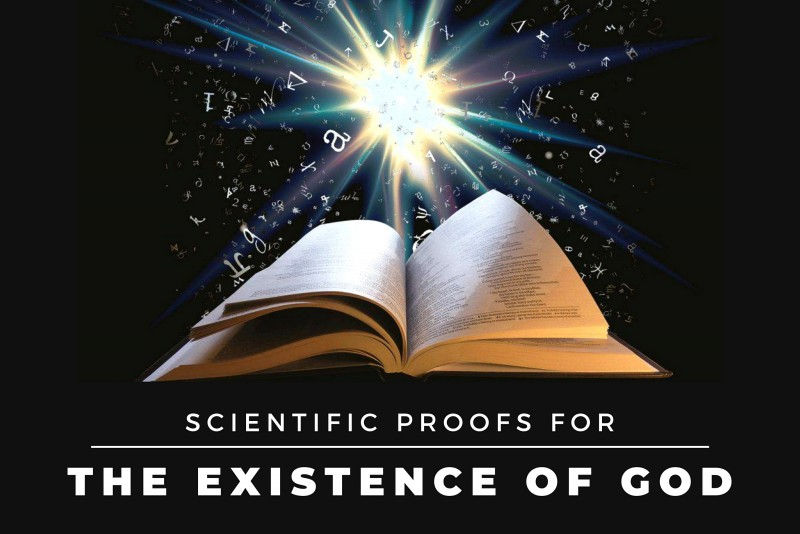

The Ontological Argument

Proofs of the Existence of God
- Zalta's first-order proof based on Anselm's argument
- Rushby's higher-order proof based on Anselm's argument
- Benzmüller and Woltzenlogel-Paleo's second-order modal proof based on
Gödel's argument
- Dana Scott typed up
Gödel's handwritten presentation.
- Gödel's axioms are contradictory, and
Scott fixed that.
- Gödel's and Scott's axioms have
P ⇒ □P (modal collapse) as
a theorem.
- Benzmüller and Woltzenlogel-Paleo produced a simplified version
that avoids modal collapse.
- Proofs done in TPI and
also in Isabelle.
The Benzmüller and Woltzenlogel-Paleo Proof
- Formulae encoded in second-order modal logic
- Second-order modal logic translated to THF
- Incremental development using TPI
- Proofs discharged via SystemOnTPTP
See the press coverage, e.g.,
Der Spiegel